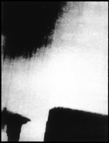

|

Mary Lucier

|
|

Polaroid Image Series (1969-1974)
with I am sitting in a room (Alvin Lucier)
Room
Between 1969 and 1974 Mary Lucier made a series of slide projection works titled Polaroid Image Series, begun as a collaboration with the composer Alvin Lucier and based on the structure of his composition for voice and tape, I am sitting in a room. In this sound work, Alvin Lucier recorded himself reading a text describing the making of the work. The recording was played back into the room repeatedly, rerecorded each time, until the original statement became unintelligible as a representational form, leaving only the resonant frequencies of the room and the rhythm of speech. Following the same structure, Mary Lucier introduced an original Polaroid photograph through a Polaroid copier, thus beginning a sequence of 50 images in which each subsequent generation becomes itself a copy of the one before it. As in Alvin Lucier's sound work, small errors that occurred during the process were incorporated into the work and amplified as it progressed. The resulting 50 black and white slides were projected sequentially, along with the original thirteen-minute audio work. The first performance of the Polaroid Image Series and I am sitting in a room was presented as a collaboration between the two artists at the Solomon R. Guggenheim Museum on March 25, 1970. Numerous other image versions were produced between 1970 and 1974. An installation including four Polaroid series--Room, Shigeko, Croquet , and City of Boston--was shown at the Whitney Museum of American Art in the historic exhibition Into the Light: The Projected Image in American Art, 1964 - 1977. The first digital video editions were produced in 2006.
Mary Lucier
March 7, 2007
|
|